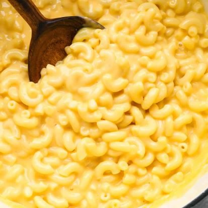

Healthy Mac and Cheese

This is one of my go to healthy Mac and Cheese recipes.
Macros: 26g Protein, 53g Carbs, 5g Fat, per serving.
Makes 2 servings.
Ingredients
- Fat Free Cottage Cheese
- Cheddar Cheese Powder (Hoosier Hill Farm)
- Fat Free Milk
- Protein Pasta
Instructions
- Boil 2 servings of protein pasta. (4oz)
- Drain pasta and put back into pot.
- 2 servings of Cottage Cheese. (226g)
- 4 servings of Cheddar Cheese Powder. (32g)
- 1/2 cup Fat Free Milk.
- Blend together in a blender.
- Add to Protein Pasta and mix.